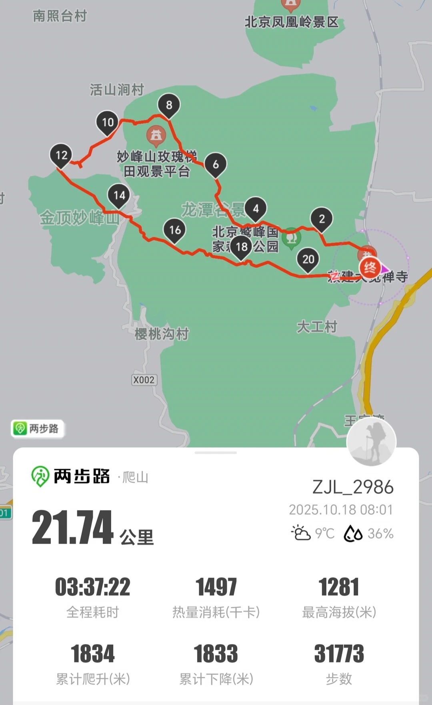
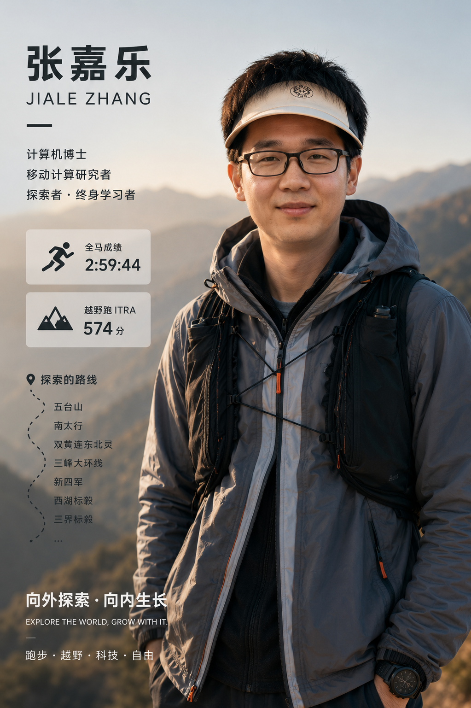
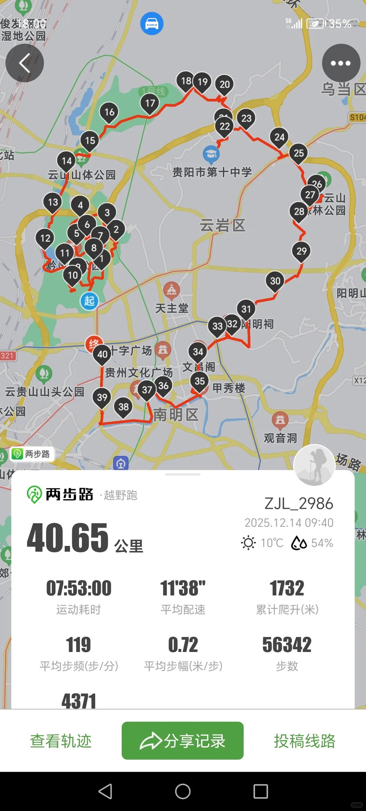
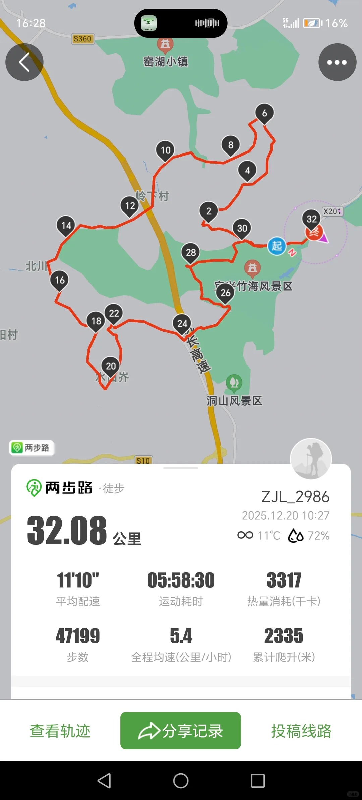
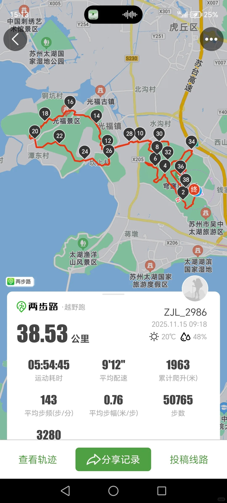
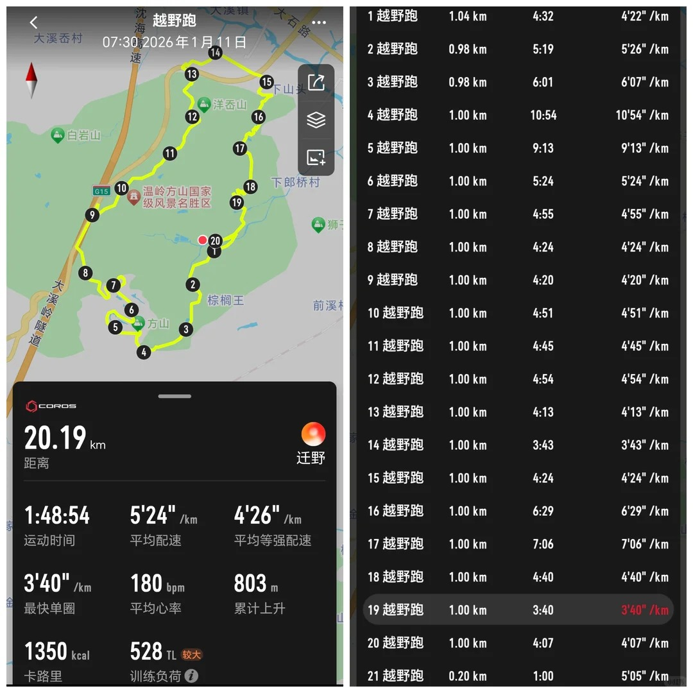
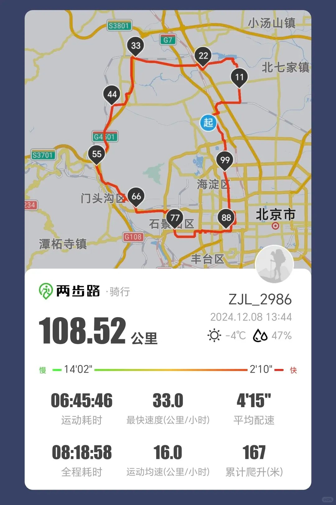
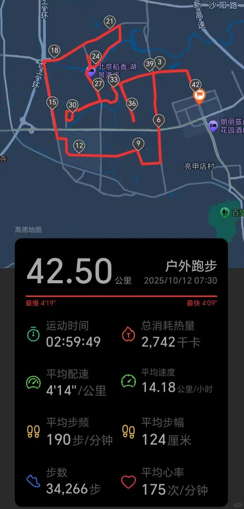
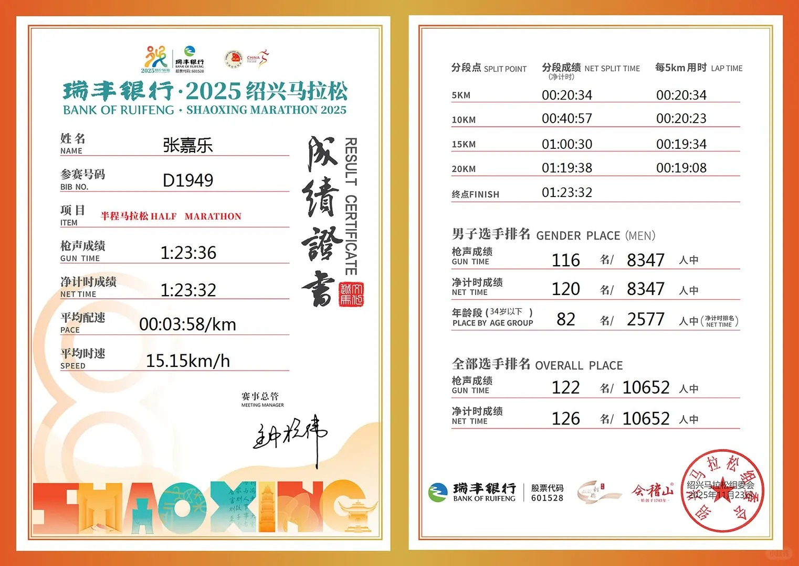
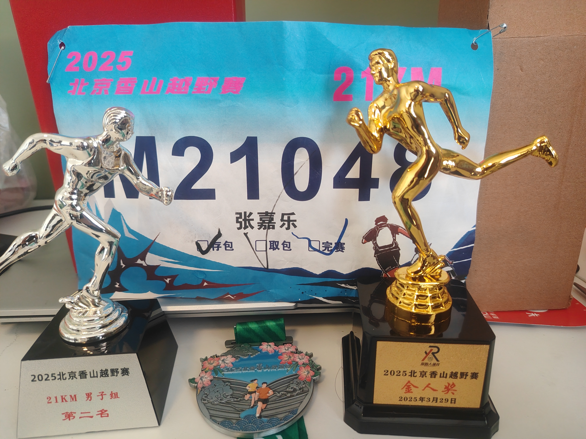

三峰 · 北京
Trail Running · 21.74 km · 3:37:22 · +1,834 m


I enjoy weekend hikes: 20–40 km routes with 1,500–2,500 m of elevation gain.

Trail Running · 21.74 km · 3:37:22 · +1,834 m

Trail Running · 40.65 km · 7:53:00 · +1,732 m

Trail Running · 32.08 km · 5:58:30 · +2,335 m

Trail Running · 38.53 km · 5:54:45 · +1,963 m

Trail Running · 20.19 km · 1:48:54 · +803 m

Cycling · 108.52 km · 6:45:46 moving time · +167 m

大众精英级 · 海淀马拉松

大众精英级 · 绍兴马拉松

香山越野赛 · ITRA Index 574
